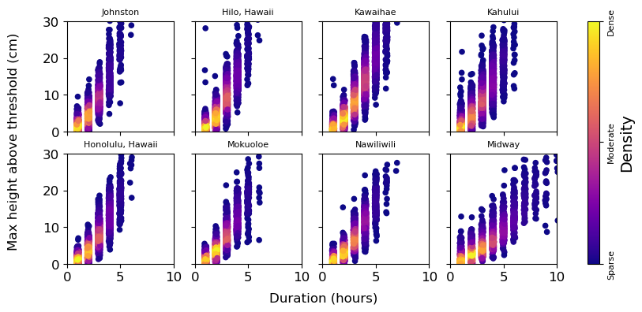
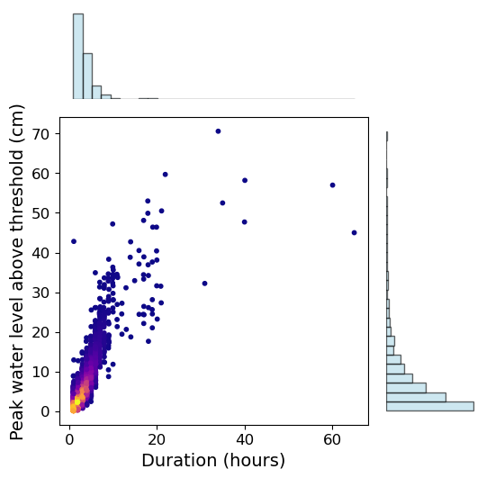
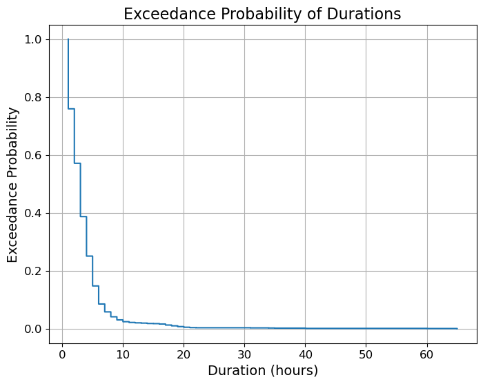
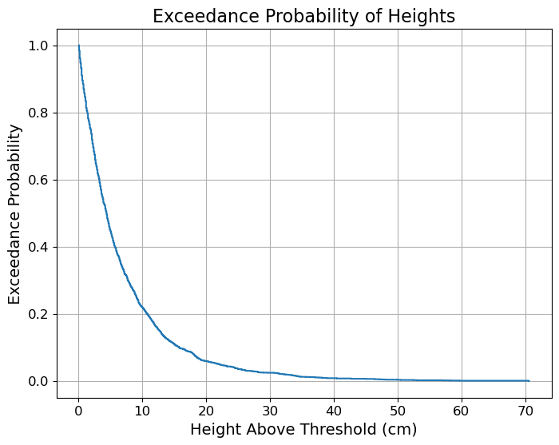
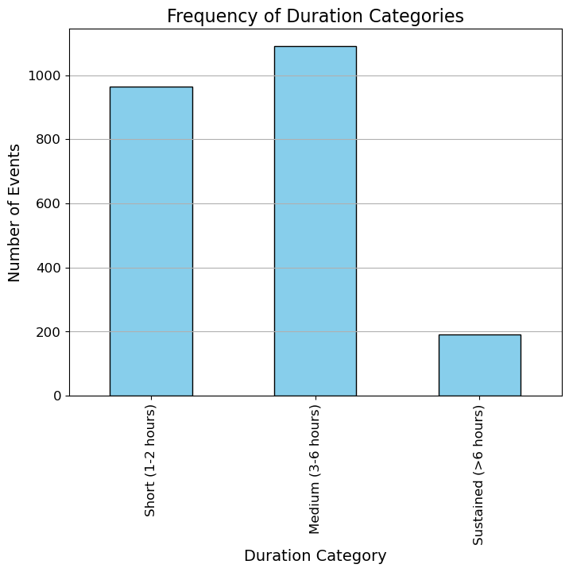
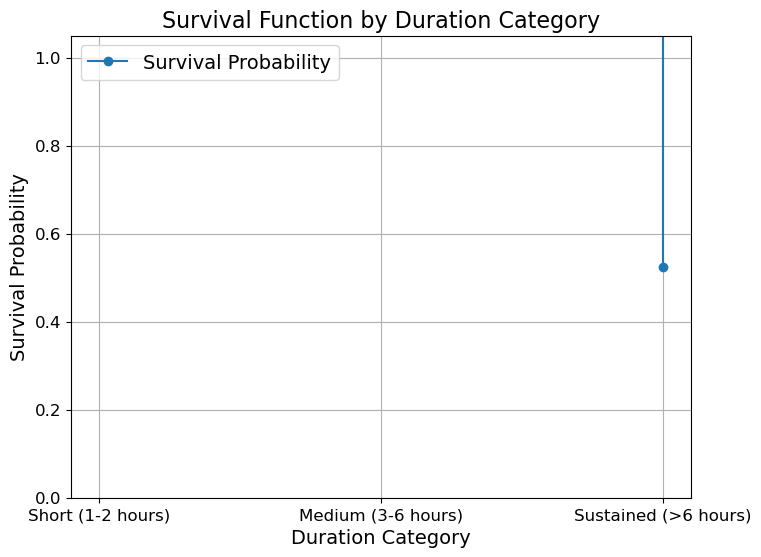
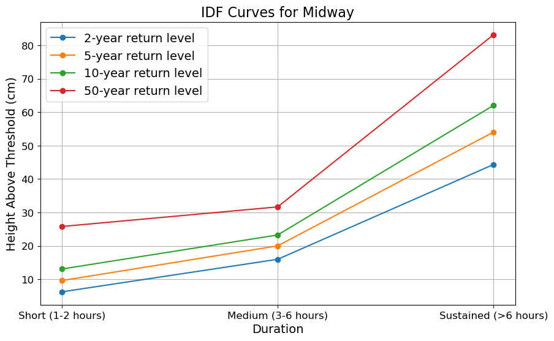

Flood Duration#
Tralala
%run setup.ipynb
data_dir = Path('../data' )
output_dir = Path('../output')
# load the data
SL_daily_max = xr.open_dataset(data_dir / 'SL_daily_max.nc')
---------------------------------------------------------------------------
KeyError Traceback (most recent call last)
File /opt/anaconda3/envs/SLI39/lib/python3.9/site-packages/xarray/backends/file_manager.py:211, in CachingFileManager._acquire_with_cache_info(self, needs_lock)
210 try:
--> 211 file = self._cache[self._key]
212 except KeyError:
File /opt/anaconda3/envs/SLI39/lib/python3.9/site-packages/xarray/backends/lru_cache.py:56, in LRUCache.__getitem__(self, key)
55 with self._lock:
---> 56 value = self._cache[key]
57 self._cache.move_to_end(key)
KeyError: [<class 'netCDF4._netCDF4.Dataset'>, ('/Users/jfiedler/Documents/Repositories/SL_Hawaii/SL_Hawaii/data/SL_daily_max.nc',), 'r', (('clobber', True), ('diskless', False), ('format', 'NETCDF4'), ('persist', False)), '3620ed8f-4599-4393-9793-bbe0d7af6338']
During handling of the above exception, another exception occurred:
FileNotFoundError Traceback (most recent call last)
Cell In[1], line 6
3 output_dir = Path('../output')
5 # load the data
----> 6 SL_daily_max = xr.open_dataset(data_dir / 'SL_daily_max.nc')
File /opt/anaconda3/envs/SLI39/lib/python3.9/site-packages/xarray/backends/api.py:573, in open_dataset(filename_or_obj, engine, chunks, cache, decode_cf, mask_and_scale, decode_times, decode_timedelta, use_cftime, concat_characters, decode_coords, drop_variables, inline_array, chunked_array_type, from_array_kwargs, backend_kwargs, **kwargs)
561 decoders = _resolve_decoders_kwargs(
562 decode_cf,
563 open_backend_dataset_parameters=backend.open_dataset_parameters,
(...)
569 decode_coords=decode_coords,
570 )
572 overwrite_encoded_chunks = kwargs.pop("overwrite_encoded_chunks", None)
--> 573 backend_ds = backend.open_dataset(
574 filename_or_obj,
575 drop_variables=drop_variables,
576 **decoders,
577 **kwargs,
578 )
579 ds = _dataset_from_backend_dataset(
580 backend_ds,
581 filename_or_obj,
(...)
591 **kwargs,
592 )
593 return ds
File /opt/anaconda3/envs/SLI39/lib/python3.9/site-packages/xarray/backends/netCDF4_.py:646, in NetCDF4BackendEntrypoint.open_dataset(self, filename_or_obj, mask_and_scale, decode_times, concat_characters, decode_coords, drop_variables, use_cftime, decode_timedelta, group, mode, format, clobber, diskless, persist, lock, autoclose)
625 def open_dataset( # type: ignore[override] # allow LSP violation, not supporting **kwargs
626 self,
627 filename_or_obj: str | os.PathLike[Any] | BufferedIOBase | AbstractDataStore,
(...)
643 autoclose=False,
644 ) -> Dataset:
645 filename_or_obj = _normalize_path(filename_or_obj)
--> 646 store = NetCDF4DataStore.open(
647 filename_or_obj,
648 mode=mode,
649 format=format,
650 group=group,
651 clobber=clobber,
652 diskless=diskless,
653 persist=persist,
654 lock=lock,
655 autoclose=autoclose,
656 )
658 store_entrypoint = StoreBackendEntrypoint()
659 with close_on_error(store):
File /opt/anaconda3/envs/SLI39/lib/python3.9/site-packages/xarray/backends/netCDF4_.py:409, in NetCDF4DataStore.open(cls, filename, mode, format, group, clobber, diskless, persist, lock, lock_maker, autoclose)
403 kwargs = dict(
404 clobber=clobber, diskless=diskless, persist=persist, format=format
405 )
406 manager = CachingFileManager(
407 netCDF4.Dataset, filename, mode=mode, kwargs=kwargs
408 )
--> 409 return cls(manager, group=group, mode=mode, lock=lock, autoclose=autoclose)
File /opt/anaconda3/envs/SLI39/lib/python3.9/site-packages/xarray/backends/netCDF4_.py:356, in NetCDF4DataStore.__init__(self, manager, group, mode, lock, autoclose)
354 self._group = group
355 self._mode = mode
--> 356 self.format = self.ds.data_model
357 self._filename = self.ds.filepath()
358 self.is_remote = is_remote_uri(self._filename)
File /opt/anaconda3/envs/SLI39/lib/python3.9/site-packages/xarray/backends/netCDF4_.py:418, in NetCDF4DataStore.ds(self)
416 @property
417 def ds(self):
--> 418 return self._acquire()
File /opt/anaconda3/envs/SLI39/lib/python3.9/site-packages/xarray/backends/netCDF4_.py:412, in NetCDF4DataStore._acquire(self, needs_lock)
411 def _acquire(self, needs_lock=True):
--> 412 with self._manager.acquire_context(needs_lock) as root:
413 ds = _nc4_require_group(root, self._group, self._mode)
414 return ds
File /opt/anaconda3/envs/SLI39/lib/python3.9/contextlib.py:119, in _GeneratorContextManager.__enter__(self)
117 del self.args, self.kwds, self.func
118 try:
--> 119 return next(self.gen)
120 except StopIteration:
121 raise RuntimeError("generator didn't yield") from None
File /opt/anaconda3/envs/SLI39/lib/python3.9/site-packages/xarray/backends/file_manager.py:199, in CachingFileManager.acquire_context(self, needs_lock)
196 @contextlib.contextmanager
197 def acquire_context(self, needs_lock=True):
198 """Context manager for acquiring a file."""
--> 199 file, cached = self._acquire_with_cache_info(needs_lock)
200 try:
201 yield file
File /opt/anaconda3/envs/SLI39/lib/python3.9/site-packages/xarray/backends/file_manager.py:217, in CachingFileManager._acquire_with_cache_info(self, needs_lock)
215 kwargs = kwargs.copy()
216 kwargs["mode"] = self._mode
--> 217 file = self._opener(*self._args, **kwargs)
218 if self._mode == "w":
219 # ensure file doesn't get overridden when opened again
220 self._mode = "a"
File src/netCDF4/_netCDF4.pyx:2469, in netCDF4._netCDF4.Dataset.__init__()
File src/netCDF4/_netCDF4.pyx:2028, in netCDF4._netCDF4._ensure_nc_success()
FileNotFoundError: [Errno 2] No such file or directory: '/Users/jfiedler/Documents/Repositories/SL_Hawaii/SL_Hawaii/data/SL_daily_max.nc'
# Extracting the necessary data
flood_day = SL_daily_max['flood_day']
time = SL_daily_max['time']
station_names = SL_daily_max['station_name'].values
# Convert time to pandas datetime
time = pd.to_datetime(time.values)
# Initialize a dictionary to hold results
flood_events = {}
# Loop through each station
for i, station in enumerate(station_names):
station_flood_days = flood_day[:, i].values
station_flood_days = pd.Series(station_flood_days, index=time)
# Group by year
station_flood_days_by_year = station_flood_days.groupby(station_flood_days.index.year)
# Initialize list to hold all events for this station
station_events = []
for year, data in station_flood_days_by_year:
flood_event_durations = []
current_event_length = 0
for day in data:
if day:
current_event_length += 1
else:
if current_event_length > 0:
flood_event_durations.append(current_event_length)
current_event_length = 0
# Append the last event if it was ongoing at the end of the year
if current_event_length > 0:
flood_event_durations.append(current_event_length)
# Store the events for this year
station_events.append({
"year": year,
"events": flood_event_durations
})
# Store the results for the station
flood_events[station] = station_events
# Configure the plot grid with larger station names
# Extract unique years from the dataset, sorted for plotting
years = sorted({year_data["year"] for station_events in flood_events.values() for year_data in station_events})
# Define the number of stations and 5-year interval ticks
num_stations = len(station_names)
five_year_ticks = [year for year in years if year % 5 == 0]
# Create subplots: one per station, sharing the x-axis
fig, axes = plt.subplots(nrows=num_stations, ncols=1, figsize=(6, 10), sharex=True)
plt.subplots_adjust(hspace=0.05) # Decrease hspace value to bring subplots closer
# Generate boxplots for each station
for ax, station in zip(axes, station_names):
yearly_durations = {year: [] for year in years}
# Gather flood event durations per year for the current station
for year_data in flood_events[station]:
yearly_durations[year_data["year"]].extend(year_data["events"])
# Prepare the boxplot data
boxplot_data = [yearly_durations[year] for year in years]
# Create the boxplot with customized aesthetics
ax.boxplot(
boxplot_data,
positions=range(len(years)),
patch_artist=True,
boxprops=dict(facecolor='lightblue', color='blue', alpha=0.7),
medianprops=dict(color='red'),
whiskerprops=dict(color='blue', alpha=0.5),
capprops=dict(color='blue', alpha=0.5)
)
ax.set_ylim(0, 30)
# Label each subplot with the station name
ax.text(2, ax.get_ylim()[1] * 0.8, station, fontsize=12, ha='left', color='black')
ax.set_yticks(range(0, 26, 10))
ax.set_yticklabels(range(0, 26, 10),fontsize=10)
# Remove x-axis labels from all but the last subplot
for ax in axes[:-1]:
ax.set_xticks([])
# Set x-ticks at 5-year intervals on the last subplot
axes[-1].set_xticks([years.index(year) for year in five_year_ticks])
axes[-1].set_xticklabels(five_year_ticks, ha='right', fontsize=10)
axes[-1].set_xlabel('Year', fontsize=12)
# Add a single y-axis label for the entire figure
fig.text(0.04, 0.5, 'Duration (days)', va='center', rotation='vertical', fontsize=12)
Text(0.04, 0.5, 'Duration (days)')
# load hourly data
hourly_data = xr.open_dataset(data_dir / 'SL_hourly_data.nc')
def get_flood_ds(hourly_data = hourly_data, threshold=30):
flood_hour = (hourly_data.sea_level_MHHW.values > threshold)
flood_hour
flood_hour = np.transpose(flood_hour)
flood_hour_df = pd.DataFrame(flood_hour, index = hourly_data.time.values, columns = hourly_data.record_id.values)
# get sea level data where flood_hour is True
flood_data = hourly_data.sea_level_MHHW.where(flood_hour.T)
flood_data_df = pd.DataFrame(flood_data.T-threshold, index = hourly_data.time.values, columns = hourly_data.record_id.values)
# Find indices of flood events, and the duration of each event for record id = 57
# Initialize a dictionary to store the durations
flood_durations = {}
flood_heights = {}
df_flood = flood_hour_df
# Loop through each sensor column
for column in flood_hour_df.columns:
flood_durations[column] = []
flood_heights[column] = []
# Find the indices where flooding starts and ends
flood_events = df_flood[column].ne(df_flood[column].shift()).cumsum()
# Group by the flood event indices, filtering out False events
for event_id, group in df_flood.groupby(flood_events):
if group[column].iloc[0]: # Only consider True (flood) events
start_time = group.index.min()
end_time = group.index.max()
duration = end_time - start_time
# round to nearest hour
duration = np.round(duration.total_seconds() / 3600) + 1
flood_durations[column].append((start_time, duration))
height = flood_data_df.loc[start_time:end_time, column].max() # max height
flood_heights[column].append((start_time, height))
# make dataframe from dictionary
# Assuming flood_durations and hourly_data are already defined
# Initialize an empty list to store DataArrays
data_arrays = []
# Loop through each record_id and create a DataArray
for record_id in hourly_data.record_id.values:
flood_durations_df = pd.DataFrame(flood_durations[record_id])
flood_durations_df.columns = ['time', 'duration']
flood_heights_df = pd.DataFrame(flood_heights[record_id])
flood_heights_df.columns = ['time', 'height']
# Merge the two DataFrames on 'time'
merged_df = pd.merge(flood_durations_df, flood_heights_df, on='time')
# Create a DataArray with both 'duration' and 'height'
flood_data_da = xr.DataArray(
merged_df[['duration', 'height']].values,
dims=['time', 'variable'],
coords={'time': merged_df.time.values, 'variable': ['duration', 'height'], 'record_id': record_id}
)
data_arrays.append(flood_data_da)
# Combine all DataArrays into a single Dataset
flood_data_ds = xr.concat(data_arrays, dim='record_id')
# Convert to Dataset
flood_data_ds = flood_data_ds.to_dataset(dim='variable')
# make storm time by shifting time by 4 months, such that May 1st is the start of the storm season
# Convert the time values to pandas DatetimeIndex
time_values = pd.to_datetime(flood_data_ds.time.values)
# Jan 1 should be the equivalent of May 1
shifted_time_values = time_values + pd.DateOffset(months=4)
#remove anything in 1982
shifted_time_values = shifted_time_values[shifted_time_values.year != 1982]
# Assign the shifted time values back to the dataset
flood_data_ds['time'] = shifted_time_values
return flood_data_ds
flood_data_ds = get_flood_ds(hourly_data = hourly_data, threshold=30)
# scatterplot flood duration vs year
from matplotlib.colors import LinearSegmentedColormap
# make figure size small
plt.figure(figsize=(10,4))
# Create a custom color ramp and exclude the lightest shade
full_palette = sns.color_palette("Blues", n_colors=256)
# adjusted_heatmap_palette = full_palette[50:] # Skip the lightest 50 shades
# Convert the adjusted palette to a colormap
# custom_palette = LinearSegmentedColormap.from_list("custom_blues", adjusted_heatmap_palette)
custom_palette = sns.color_palette("OrRd", as_cmap=True)
# selected_data['duration'] = selected_data['duration'].astype(float)
# flood_durations_ds['month'] = flood_durations_ds['month'].astype(float)
record_ids = flood_data_ds['record_id'].values
station_names = hourly_data['station_name'].sel(record_id=record_ids).values
for i, record_id in enumerate(record_ids):
# Select data for the current record_id and drop NaNs
selected_data = flood_data_ds.sel(record_id=record_id).dropna(dim='time')
# Ensure 'duration' is numeric
selected_data['duration'] = selected_data['duration'].astype(float)
# Plot each station's data on a different y-coordinate
scatter = plt.scatter(selected_data['time'], [i + 1] * len(selected_data['time']), s=10 * selected_data['duration'], c=selected_data['height'], cmap=custom_palette)
plt.xlabel('Time (Storm Year)')
plt.yticks(range(1, len(record_ids) + 1), hourly_data['station_name'].sel(record_id=record_ids).values) # Set y-ticks to show station labels
plt.colorbar(scatter, label='Max height \nabove threshold (cm)')
# show the colorbar
<matplotlib.colorbar.Colorbar at 0x334c9e430>
# scatter plot height vs duration for each station
# make figure size small
from scipy.stats import gaussian_kde
def plot_flood_duration_vs_height(flood_data_ds, station_names):
# Create figure and subplots
fig, axes = plt.subplots(2, 4, figsize=(10, 4), sharex=True, sharey=True) # 2 rows, 4 columns
# Flatten the axes array for easy iteration
axes = axes.flatten()
# Loop through each station
for i, record_id in enumerate(record_ids):
# Select data for the current record_id and drop NaNs
selected_data = flood_data_ds.sel(record_id=record_id).dropna(dim='time')
# Ensure 'duration' is numeric
selected_data['duration'] = selected_data['duration'].astype(float)
# Extract year and apply jitter to duration for better visualization
jitter_duration = selected_data['duration'] + np.random.uniform(-0.1, 0.1, size=selected_data['duration'].size)
# Calculate point density
xy = np.vstack([jitter_duration, selected_data['height']])
z = gaussian_kde(xy)(xy)
# Plot each station's data on its respective subplot, using the density (z) as color
scatter = axes[i].scatter(jitter_duration, selected_data['height'], c=z, cmap='plasma', s=20)
# # Set labels for each subplot
axes[i].set_title(station_names[i], fontsize=8)
# axes[i].set_xlabel('Duration (hours)')
# axes[i].set_ylabel('Max height above threshold (cm)')
# set x and y limits
axes[i].set_xlim(0, 10)
axes[i].set_ylim(0, 30)
# Add a common colorbar
cbar = fig.colorbar(scatter, ax=axes, orientation='vertical', label='Density')
# Set custom ticks and labels for the colorbar
cbar.set_ticks([np.min(z), np.mean(z), np.max(z)])
cbar.set_ticklabels(['Sparse', 'Moderate', 'Dense'], rotation=90,verticalalignment='center',fontsize=8) # Custom labels
# add x and y labels
fig.text(0.45, -0.01, 'Duration (hours)', ha='center', fontsize=12)
fig.text(0.05, 0.5, 'Max height above threshold (cm)', va='center', rotation='vertical', fontsize=12)
From the previous plots, it is clear that Midway is experiencing more frequent flooding, but less intense. Is this a remove-the-trend thing?
flood_data_30 = get_flood_ds(hourly_data=hourly_data,threshold=30)
flood_data_15 = get_flood_ds(hourly_data=hourly_data,threshold=15)
plot_flood_duration_vs_height(flood_data_15, station_names)

import matplotlib.pyplot as plt
import numpy as np
from scipy.stats import gaussian_kde
from matplotlib.gridspec import GridSpec
# Example data for one station (you can adjust this to loop through your stations)
record_id = 50
selected_data = flood_data_15.sel(record_id=record_id).dropna(dim='time')
selected_data['duration'] = selected_data['duration'].astype(float)
jitter_duration = selected_data['duration'] + np.random.uniform(-0.1, 0.1, size=selected_data['duration'].size)
# Calculate point density for color mapping
xy = np.vstack([jitter_duration, selected_data['height']])
z = gaussian_kde(xy)(xy)
# Create the figure and GridSpec layout
fig = plt.figure(figsize=(6, 6))
gs = GridSpec(4, 4, figure=fig)
# Create scatter plot in the center
ax_main = fig.add_subplot(gs[1:4, 0:3])
scatter = ax_main.scatter(jitter_duration, selected_data['height'], c=z, cmap='plasma', s=10)
ax_main.set_xlabel('Duration (hours)')
ax_main.set_ylabel('Peak water level above threshold (cm)')
# Add colorbar to scatter plot
# cbar = fig.colorbar(scatter, ax=ax_main, orientation='vertical', label='Density')
# cbar.set_ticks([np.min(z), np.mean(z), np.max(z)])
# cbar.ax.set_yticklabels(['Sparse', 'Moderate', 'Dense'], rotation=90, verticalalignment='center')
# Create top histogram for duration
ax_histx = fig.add_subplot(gs[0, 0:3], sharex=ax_main)
ax_histx.hist(jitter_duration, bins=30, color='lightblue', alpha=0.6, edgecolor='black')
ax_histx.axis('off') # Hide axes for cleaner look
# Create side histogram for height
ax_histy = fig.add_subplot(gs[1:4, 3], sharey=ax_main)
ax_histy.hist(selected_data['height'], bins=30, orientation='horizontal', color='lightblue', alpha=0.6, edgecolor='black')
ax_histy.axis('off') # Hide axes for cleaner look
# Adjust layout to fit everything nicely
# plt.tight_layout()
# Show plot
plt.show()

time = selected_data['time']
# Durations
sorted_durations = np.sort(selected_data['duration'])
exceedance_prob_duration = 1.0 - np.arange(1, len(sorted_durations) + 1) / len(sorted_durations)
plt.figure(figsize=(8,6))
plt.step(sorted_durations, exceedance_prob_duration, where='post')
plt.title('Exceedance Probability of Durations')
plt.xlabel('Duration (hours)')
plt.ylabel('Exceedance Probability')
plt.grid(True)

sorted_heights = np.sort(selected_data['height'])
exceedance_prob_height = 1.0 - np.arange(1, len(sorted_heights) + 1) / len(sorted_heights)
plt.figure(figsize=(8,6))
plt.step(sorted_heights, exceedance_prob_height, where='post')
plt.title('Exceedance Probability of Heights')
plt.xlabel('Height Above Threshold (cm)')
plt.ylabel('Exceedance Probability')
plt.grid(True)
plt.show()

selected_data = selected_data.to_dataframe()
# Define a function to categorize durations
# Define the ordered categories
duration_order = ['Short (1-2 hours)', 'Medium (3-6 hours)', 'Sustained (>6 hours)']
def categorize_duration(duration):
if duration <= 2:
return duration_order[0]
elif 3 <= duration <= 6:
return duration_order[1]
else:
return duration_order[2]
# Apply the function to create a new column
selected_data['duration_category'] = selected_data['duration'].apply(categorize_duration)
# Calculate the frequency of each category
category_counts = selected_data['duration_category'].value_counts()
total_events = len(data)
# Calculate the probability for each category
category_probs = category_counts / total_events
print("Frequency of Duration Categories:")
print(category_counts)
print("\nProbability of Duration Categories:")
print(category_probs)
Frequency of Duration Categories:
duration_category
Medium (3-6 hours) 1090
Short (1-2 hours) 963
Sustained (>6 hours) 191
Name: count, dtype: int64
Probability of Duration Categories:
duration_category
Medium (3-6 hours) 2.986301
Short (1-2 hours) 2.638356
Sustained (>6 hours) 0.523288
Name: count, dtype: float64
# Ensure the categories are ordered
category_counts = category_counts.reindex(duration_order)
# Compute cumulative counts from shortest to longest
cumulative_counts = category_counts[::-1].cumsum()[::-1]
# Compute survival probabilities
survival_probs = cumulative_counts / total_events
print("\nCumulative Counts by Duration Category:")
print(cumulative_counts)
print("\nSurvival Probabilities by Duration Category:")
print(survival_probs)
Cumulative Counts by Duration Category:
duration_category
Short (1-2 hours) 2244
Medium (3-6 hours) 1281
Sustained (>6 hours) 191
Name: count, dtype: int64
Survival Probabilities by Duration Category:
duration_category
Short (1-2 hours) 6.147945
Medium (3-6 hours) 3.509589
Sustained (>6 hours) 0.523288
Name: count, dtype: float64
# Calculate total observation period in years
total_years = (time.max()-time.min())/np.timedelta64(1, 's')/3600/24/365.25
# Calculate lambda
lambda_ = total_events / total_years
print(f"\nAverage number of events per year (lambda): {lambda_:.2f}")
Average number of events per year (lambda): 8.91
return_periods = 1 / (lambda_.item() * survival_probs)
# Display return periods
print("\nReturn Periods by Duration Category (in years):")
print(return_periods)
Return Periods by Duration Category (in years):
duration_category
Short (1-2 hours) 0.018252
Medium (3-6 hours) 0.031974
Sustained (>6 hours) 0.214440
Name: count, dtype: float64
# Plot the frequency of each duration category
plt.figure(figsize=(8,6))
category_counts.plot(kind='bar', color='skyblue', edgecolor='black')
plt.title('Frequency of Duration Categories')
plt.xlabel('Duration Category')
plt.ylabel('Number of Events')
plt.grid(axis='y')
plt.show()

# Plot the survival function
plt.figure(figsize=(8,6))
plt.step(duration_order, survival_probs, where='post', marker='o', label='Survival Probability')
plt.title('Survival Function by Duration Category')
plt.xlabel('Duration Category')
plt.ylabel('Survival Probability')
plt.ylim(0, 1.05)
plt.grid(True)
plt.legend()
plt.show()

# Group data by duration category
grouped_data = selected_data.groupby('duration_category')
# Create a dictionary to store GEV parameters for each category
gev_params = {}
for category, group in grouped_data:
# Extract height data
heights = group['height'].values
# Fit GEV distribution
c, loc, scale = genextreme.fit(heights)
# Store parameters
gev_params[category] = (c, loc, scale)
print(f"GEV parameters for {category} category: c={c:.4f}, loc={loc:.4f}, scale={scale:.4f}")
GEV parameters for Medium (3-6 hours) category: c=-0.0953, loc=5.6705, scale=3.1433
GEV parameters for Short (1-2 hours) category: c=-0.3901, loc=1.0698, scale=0.9849
GEV parameters for Sustained (>6 hours) category: c=-0.1171, loc=20.4960, scale=7.0475
# Define return periods of interest
return_periods = np.arange(2,100,2) # in years
# Calculate the non-exceedance probabilities
probabilities = 1 - (1 / (np.array(return_periods) * lambda_.item()))
# Create a DataFrame to store return levels
return_levels_df = pd.DataFrame(index=return_periods, columns=duration_order)
for category in duration_order:
if category not in gev_params:
continue
c, loc, scale = gev_params[category]
# Calculate return levels for each return period
return_levels = genextreme.ppf(probabilities, c, loc=loc, scale=scale)
return_levels_df[category] = return_levels
Return Levels (Heights) for Each Duration Category and Return Period:
Short (1-2 hours) Medium (3-6 hours) Sustained (>6 hours)
2 6.224795 15.970745 44.356114
4 8.666439 18.990545 51.617372
6 10.422973 20.836613 56.110459
8 11.845925 22.186103 59.420051
10 13.063648 23.256813 62.060692
12 14.139600 24.147761 64.267777
14 15.110475 24.912661 66.169604
16 15.999675 25.584035 67.844150
18 16.823164 26.183119 69.342502
20 17.592390 26.724573 70.700025
22 18.315882 27.218955 71.942253
24 19.000185 27.674133 73.088250
26 19.650448 28.096126 74.152641
28 20.270808 28.489651 75.146899
30 20.864642 28.858473 76.080199
32 21.434749 29.205645 76.959998
34 21.983477 29.533681 77.792438
36 22.512823 29.844674 78.582646
38 23.024494 30.140389 79.334945
40 23.519969 30.422323 80.053012
42 24.000533 30.691764 80.740009
44 24.467316 30.949823 81.398669
46 24.921314 31.197466 82.031374
48 25.363413 31.435542 82.640212
50 25.794401 31.664797 83.227025
52 26.214988 31.885891 83.793445
54 26.625809 32.099414 84.340926
56 27.027442 32.305891 84.870771
58 27.420411 32.505795 85.384148
60 27.805191 32.699551 85.882112
62 28.182219 32.887545 86.365617
64 28.551893 33.070125 86.835530
66 28.914580 33.247610 87.292640
68 29.270620 33.420290 87.737671
70 29.620323 33.588431 88.171282
72 29.963979 33.752278 88.594081
74 30.301856 33.912054 89.006627
76 30.634205 34.067967 89.409436
78 30.961257 34.220209 89.802985
80 31.283231 34.368957 90.187718
82 31.600328 34.514376 90.564045
84 31.912739 34.656618 90.932348
86 32.220643 34.795827 91.292983
88 32.524207 34.932135 91.646283
90 32.823589 35.065667 91.992559
92 33.118938 35.196539 92.332102
94 33.410394 35.324861 92.665186
96 33.698090 35.450734 92.992067
98 33.982151 35.574256 93.312986
# Assume duration_order, gev_params, and lambda_ are predefined
return_periods_interest = [2, 5, 10, 50] # in years
# Create an empty dict to store the return levels for the chosen return period
return_levels_by_period = {period: [] for period in return_periods_interest}
for return_period in return_periods_interest:
# Calculate the non-exceedance probability for the chosen return period
probability = 1 - (1 / (return_period * lambda_.item()))
# Iterate over each duration category to calculate the return level for the chosen period
for category in duration_order:
if category not in gev_params:
continue
c, loc, scale = gev_params[category]
# Calculate the return level for the specific return period
return_level = genextreme.ppf(probability, c, loc=loc, scale=scale)
return_levels_by_period[return_period].append(return_level)
# Plot the return level curve for the chosen return period (e.g., 2-year)
plt.figure(figsize=(10, 6))
for return_period in return_periods_interest:
# Plot the return level curve for each return period
plt.plot(duration_order, return_levels_by_period[return_period], marker='o', label=f'{return_period}-year return level')
plt.title(f'IDF Curves for' + ' ' + station_names[i])
plt.xlabel('Duration')
plt.ylabel('Height Above Threshold (cm)')
plt.grid(True)
plt.legend()
plt.show()

We can’t do a curve here because the distribution of durations is very limited (at most stations).
# Now plot the return levels for each duration category
plt.figure(figsize=(10, 6))
for category in duration_order:
if category not in gev_params:
continue
c, loc, scale = gev_params[category]
# Calculate the return levels for each return period
return_levels = genextreme.ppf(1 - (1 / (np.array(return_periods) * lambda_.item())), c, loc=loc, scale=scale)
# Plot the return levels for each duration category
plt.plot(return_periods, return_levels, label=category)
plt.title('Return Levels for Each Duration Category')
plt.xlabel('Return Period (years)')
plt.ylabel('Height Above Threshold (cm)')
plt.grid(True)
plt.legend()
<matplotlib.legend.Legend at 0x3375ee820>